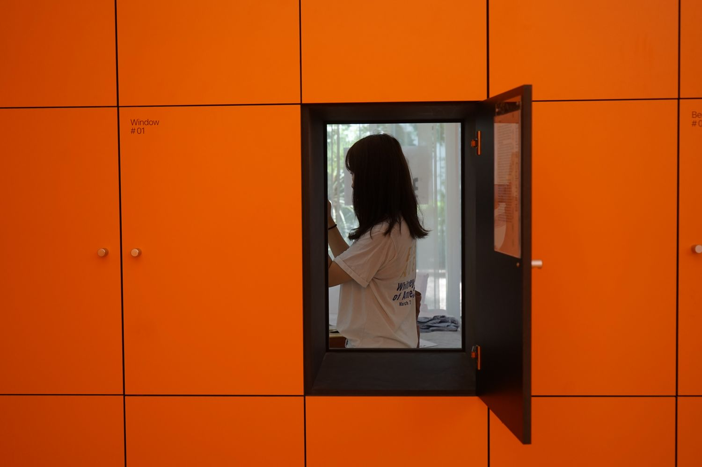

This person was actually standing at where I stood to take a picture of another person through the same window, 10 seconds before she became captured in my version of the flattened view. The contrast between the vivid, on-going space she is in, and the flat embedded frame from which I perceive her might be analogous of the flattening processing we apply to other humans.